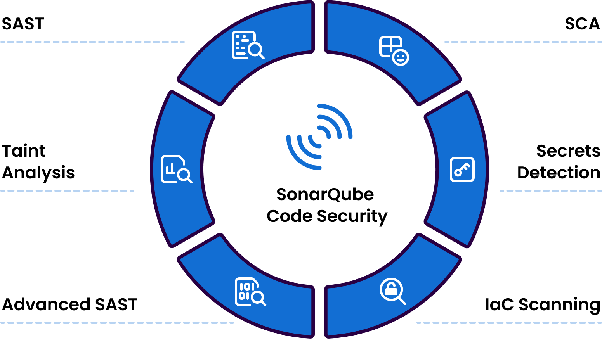

What security features does SonarQube offer?
SonarQube solutions integrate into the software development workflow, from the IDE to CI/CD. With them, developers ensure the quality and security of code through an advanced SAST analysis, SCA, IaC scanning, and secret detection. It also guarantees complete coverage for your own code, AI-generated code, and third-party code.

SonarQube security features
Below, we break down the key features of SonarQube that help maintain code security, automate tasks, and deliver secure and reliable software.
Static Application Security Testing (SAST) detects vulnerabilities, security hotspots, and other issues in the early stages of the Software Development Life Cycle (SDLC).
Advanced SAST extends security testing to detect vulnerabilities and critical issues in your code’s interaction with third-party code through dependencies that other solutions cannot detect.
Track untrusted user inputs with data flow analysis at the core of the code. Identify injection and critical security vulnerabilities.
Software Composition Analysis (SCA) scans third-party dependencies and looks for vulnerabilities. This ensures that open-source third-party components do not introduce risks into your code.
Secret detection ensures that confidential information, such as API keys, unauthorized data access, or other private services, are not exposed in production.
Infrastructure as Code (IaC) analysis detects misconfigurations and security issues in infrastructure definitions before they are released to production.
Our Integrations with SonarQube
Plugins allow you to extend functionality or integrate other tools with SonarQube

SonarQube Connector for Jira
Integration of Jira with SonarQube Server and SonarQube Cloud. Code quality in a Jira dashboard/gadget and the ability to create tasks in Jira from detected issues.

SonarQube Connector for Confluence
Integration of Confluence with SonarQube or SonarCloud. Add code quality information to the pages of your project spaces.

SonarQube Connector for Bitbucket
Integration of Bitbucket with SonarQube Server and SonarQube Cloud. All the information in Bitbucket, so users don’t have to change context.
Shall We Talk?
If you're not a customer yet and need information about SonarQube, you can contact us through the following form.